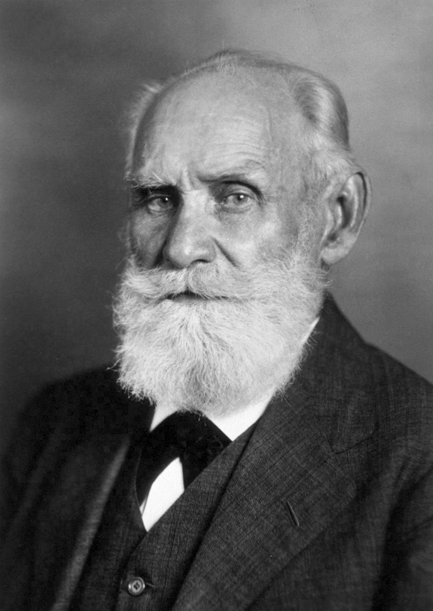
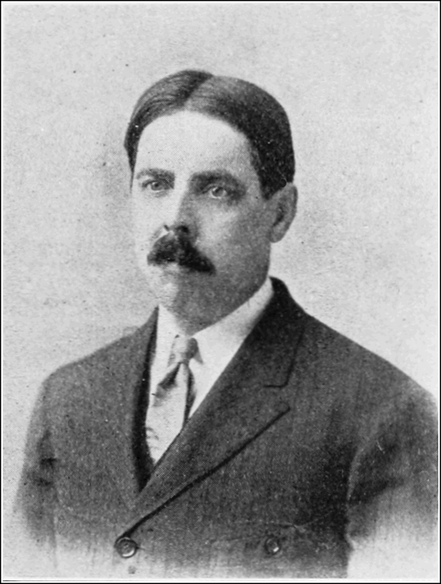
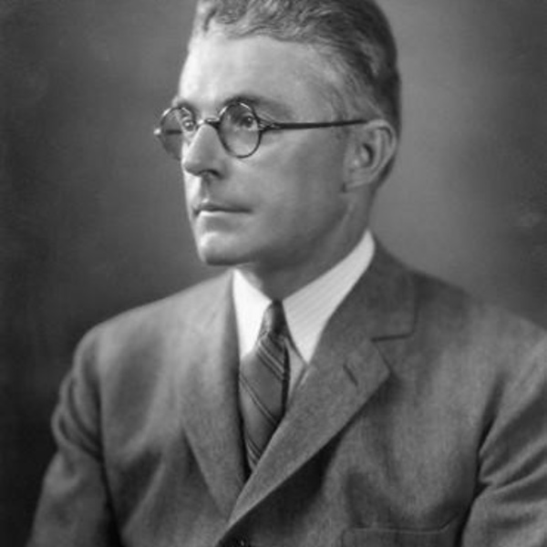
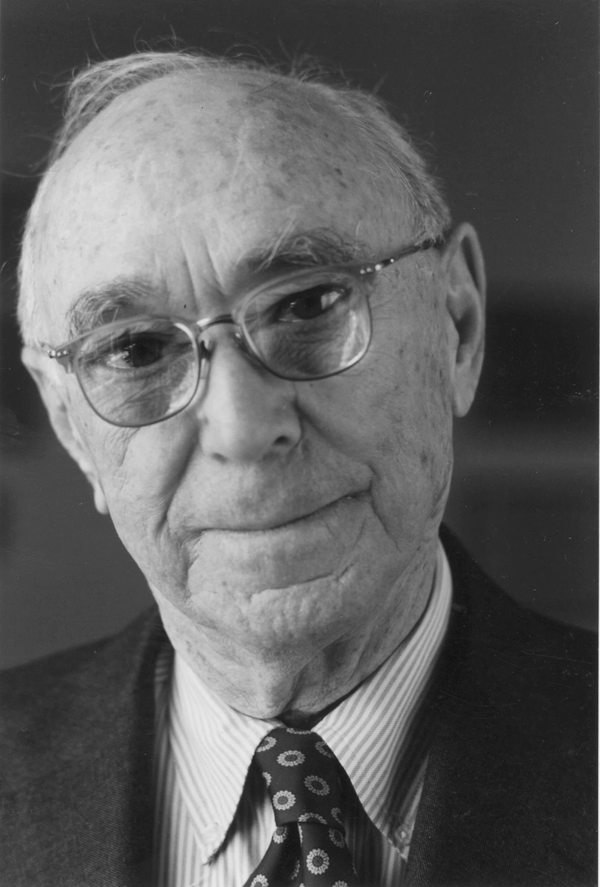

Construcción
de
Significados
Temario
- Revolución cognitiva
- Objetivismo
- Génesis del conductismo
- Introspección
- Cognitivismo
- Conciencia
- Significados
- Mente
Revolución cognitiva
Алиса Зиновьевна Розенбаум
Алиса Зиновьевна Розенбаум 🇷🇺
2 de febrero de 1905 - 6 de marzo de 1982 (77 años)Objetivismo
Génesis
del
Conductismo
Ивaн Петрoвич Пaвлов
Ивaн Петрoвич Пaвлов 🇷🇺
26 de septiembre de 1849 - 27 de febrero de 1936 (86 años)Estímulo-Respuesta
- Primer sistema de señales
- Segundo sistema de señales
Edward Lee Thorndike
Edward Lee Thorndike 🇺🇸
1 de agosto de 1874 - 9 de agosto de 1949(75 años)Ley del efecto
Nace
el
Conductismo
John Broadus Watson
John Broadus Watson 🇺🇸
CONDUCTISMO: estudio experimental objetivo y natural de la conducta, excluyendo la conciencia y la introspección.
John Broadus Watson 🇺🇸
9 de enero de 1878 - 25 de septiembre de 1958 (80 años)- Psychology as the behaviorist views it
- Pequeño Albert
Burrhus Frederic Skinner

Burrhus Frederic Skinner 🇺🇸
CONDUCTISMO: describir las leyes generales que rigen la conducta.
Burrhus Frederic Skinner 🇺🇸
20 de marzo de 1904 - 18 de agosto de 1990 (86 años)- Condicionamiento clásico
- Condicionamiento operante
- Avram Noam Chomsky
Otro punto de vista
Wilhelm Maximilian Wundt

Wilhelm Maximilian Wundt 🇩🇪
16 de agosto de 1832 - 31 de agosto de 1920 (88 años)Introspección
Jerome Seymour Bruner
Jerome Seymour Bruner 🇺🇸
1 de octubre de 1915 - 5 de junio de 2016(100 años)Cognitivismo
Conciencia
Construcción de significados
- Acts of Meaning. 1990
- Value and Need as Organizing Factors in Perception (1947)- Jerome S. Bruner and Cecile C. Goodman, Harvard University
Analogía de la mente
- La mente humana
- La mente computable